V dnešním příspěvku se ještě jednou vrátím do dalekého Istanbulu, abych vám ukázala další krásná místa, než mé vzpomínky na ně vyblednou.
Za nejkrásnější mešitu, kterou jsme v Istanbulu navštívili, bych označila tzv. Novou mešitu, která je navzdory svému názvu stará už 400 let. Interiér je bohatě vyzdoben zlatem, barevnými keramickými dlaždicemi a mramorovými reliéfy. Mešita leží na pobřeží s výhledem na Bosporskou úžinu a oproti ostatním mešitám přeplněným turisty byla tato velice klidná, poloprázdná, a možná právě proto ve mně zanechala tak příjemný dojem.
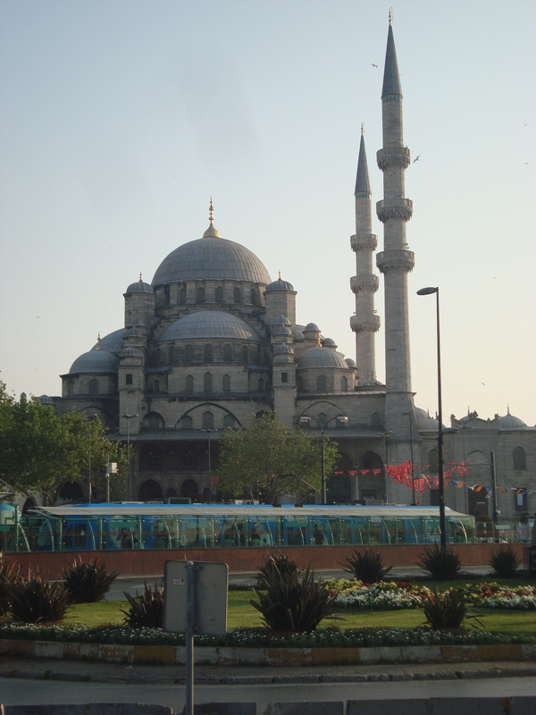
Nová mešita
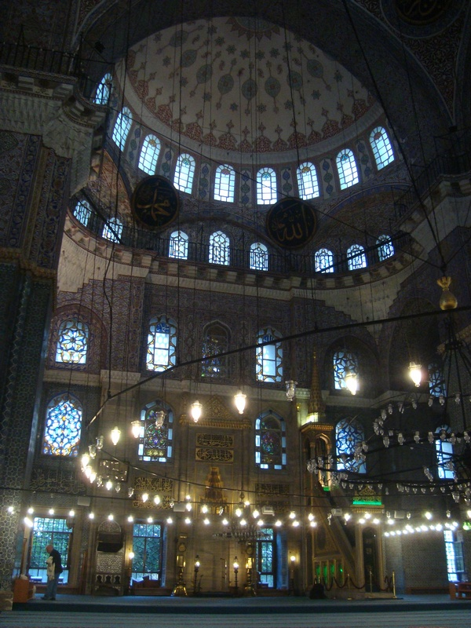
Interiér
Co by to ale bylo za návštěvu Istanbulu, kdybychom nezavítali také na některou z proslavených tržnic! Prvním a nejznámějším nákupním střediskem Istanbulu je tzv. Velký bazar a ujišťuju vás, že jestli se dá někde v Istanbulu báječně ztratit, je to právě tady :D. Jakmile zaplujete do jeho uliček a necháte se unášet davem i vystaveným zbožím, zbývá už jen doufat, že se někdy ještě dostanete ven :D. Není proto divu, že jsem v průvodci od Lonely Planet objevila mezi přiloženými mapami také přímo mapu Velkého Bazaru. Najdete tu více než 4000 obchodů a obvykle se u sebe nachází krámky s podobnou tematikou, např. zlato, oděvy, kožené zboží apod. To je ostatně pro Istanbul celkem specifické - všimla jsem si toho v celé řadě čtvrtí. Procházeli jsme ulicí a najednou kolem nás byly jen samé obchody s hudebními nástroji. Nebo jen s lampami a osvětlením. Nebo jen se svatebními šaty. Zpočátku mě to překvapilo, ale nakonec jsem usoudila, že to musí být velice praktické. Pokud sháníte konkrétní věc, prostě jen jdete do jedné ulice, tu projdete od začátku až na konec, obhlídnete nabídku a ceny a pak si vyberete :D. Taky jsem už dlouho nikde neviděla tak vysokou koncentraci krámků s fejky značkových kabelek, bot a oděvů :D. Při procházení tureckým trhem je potřeba obrnit se mimořádně velkou dávkou trpělivosti na odhánění vtíravých prodavačů - to už ale tak nějak patří ke zdejšímu koloritu. Pokud si libujete ve smlouvání, bude to tu pro vás učiněný ráj :D.
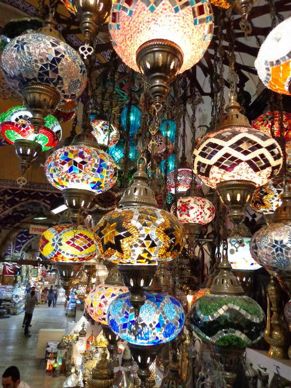
Velký bazar - shopaholikův ráj
Mně se atmosférou více než Velký bazar zalíbila tržnice s kořením, nazývaná také někdy Egyptský trh. Nachází se hned vedle Nové mešity a jak již název napovídá, spíš než oblečení tady seženete něco dobrého k jídlu - a na to mě na cestách užije :D! Nekonečné množství lokumů všech možných druhů, pestrobarevné koření, voňavé čaje, káva, kosmetika…
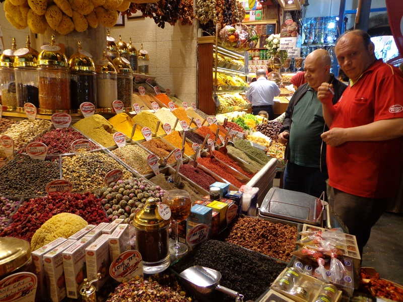
Egyptský trh
Jednou z dominant Zlatého rohu a symbolů celého města je velkolepá Süleymanova mešita. Byť nepatří k těm největším v Istanbulu, díky své poloze je prakticky nepřehlédnutelná. Údajně je také jednou z neoblíbenějších a spolu s Modrou mešitou soupeří v počtu věřících, kteří se sem chodí modlit.
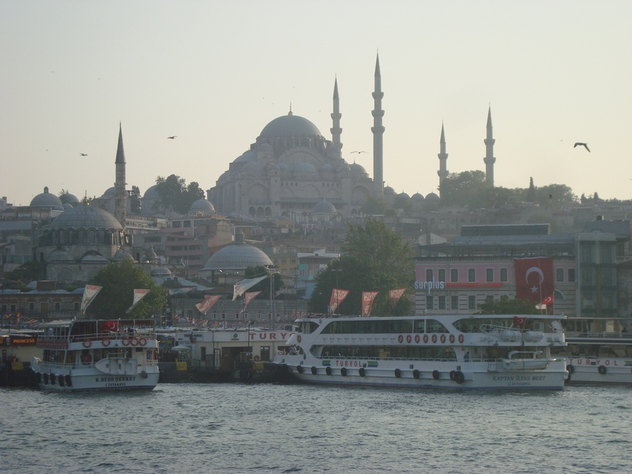
Süleymanova mešita
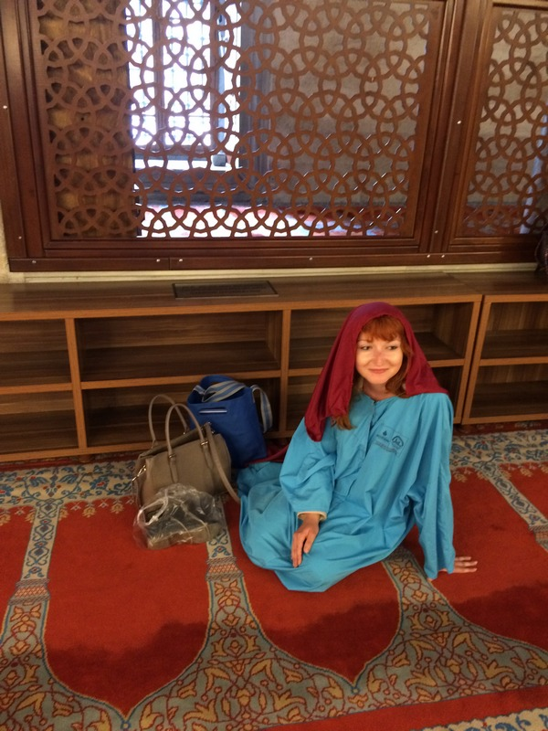
Fešný hábitek :)
Fanoušci detektivek Agathy Christie si v Istanbulu rozhodně nesmí nechat ujít návštěvu železničního nádraží Sirkeci, které bylo vybudováno jako konečná stanice evropských drah v roce 1881.
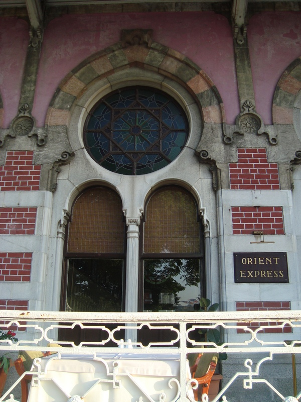
Vražda v Orient Expresu?
Poslední den našeho pobytu jsme se rozhodli opustit Sultanahmet a vydat se lodí do vzdálenější Západní čtvrti, kde se nachází také několik zajímavých památek. My jsme navštívili dvě. Tou první byla Eyüpova mešita. Jedná se o čtvrté nejposvátnější místo muslimů - hned po Mekce, Medině a Jeruzalémě. Komplex budov této mešity totiž údajně stojí na místě, kde byl pohřben přítel proroka Mohameda a uctívaný náboženský vůdce v dobách počátku islámu, Ajjúb al-Ansari. Západní čtvrť patří v Istanbulu k těm nejortodoxnějším a potkáte zde nejvíce zahalených žen. Já budu mít toto místo spojeno s docela kuriozním zážitkem, kdy si mě u východu z mešity odchytly tři asi desetileté muslimské holčičky a poprosily mě, zda by se se mnou mohly vyfotografovat :D. To asi ty před cestou čerstvě nabarvené zrzavé vlasy :D…
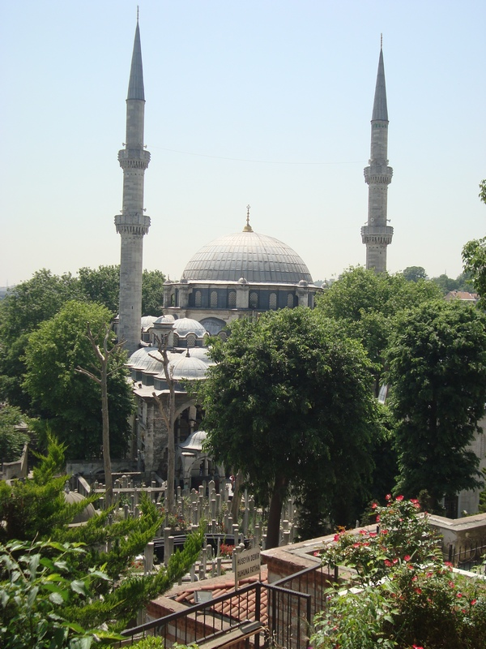
Eyüpova mešita
Pokud už se octnete v Západní čtvrti, určitě byste si neměli nechat ujít návštěvu kláštera Chora. Veškerá vnitřní výzdoba této pozoruhodné budovy (proslulé mozaiky a fresky) pochází z roku 1312. Ne všechny se zachovaly v dobrém stavu, ale i tak jsou velmi působivé.
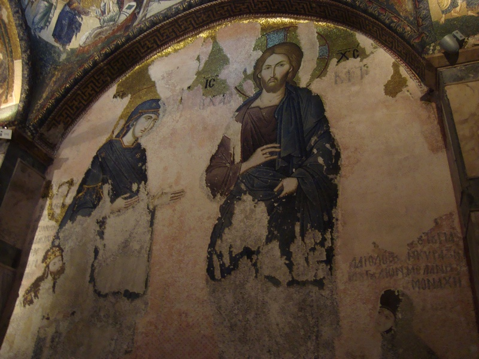
Klášter Chora
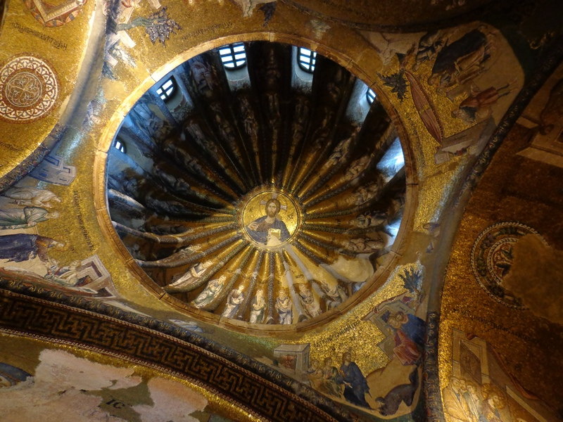
Mozaiky
Posledním zastavením mého vyprávění je Galatská věž vybudovaná v roce 1384. Musíme se za ní vrátit do severní části Zlatého rohu. Věž přežila celou řadu zemětřesení a přesto je v tak dobrém stavu, že by člověka ani nenapadlo, že už je tak stará. V horní části věže je (poněkud úzký) ochoz, z něhož je nádherná vyhlídka na město i jeho okolí. Jaké lepší místo si vybrat pro rozloučení s Istanbulem?
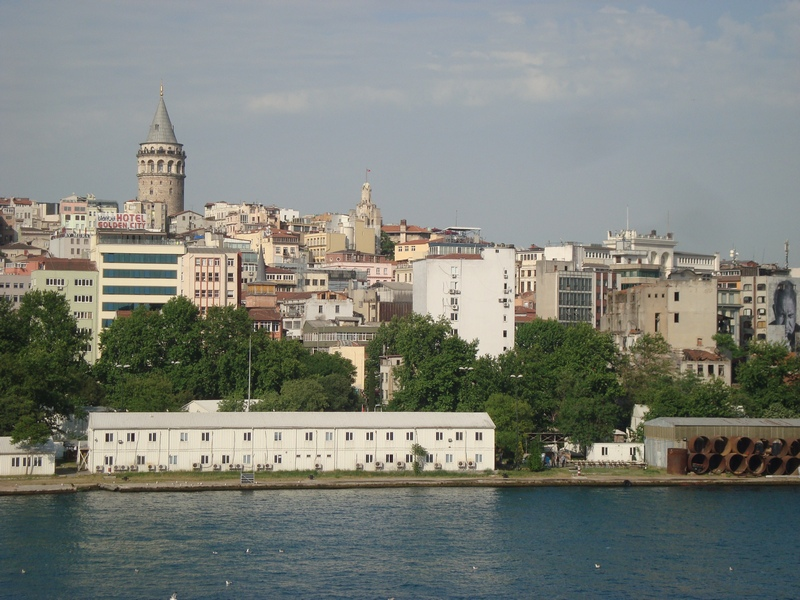
Galatská věž
Přestože těch pět dnů v zalidněné metropoli bylo dost vyčerpávajících, jsem ráda, že jsem měla možnost toho za tak krátkou dobu tolik vidět. I ty uchozené nohy na konci každého dne za to stály. Doma je ale přece jen doma, a tak jsem ráda, že po hektickém květnu si teď můžu zase užívat chvilku klidu a pohody… než zase nazuju toulavý boty :-).